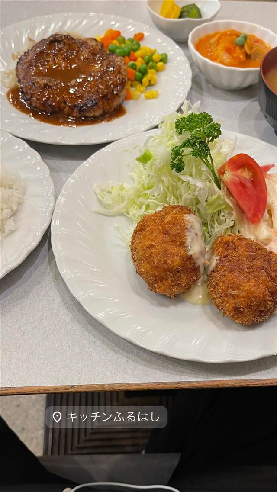
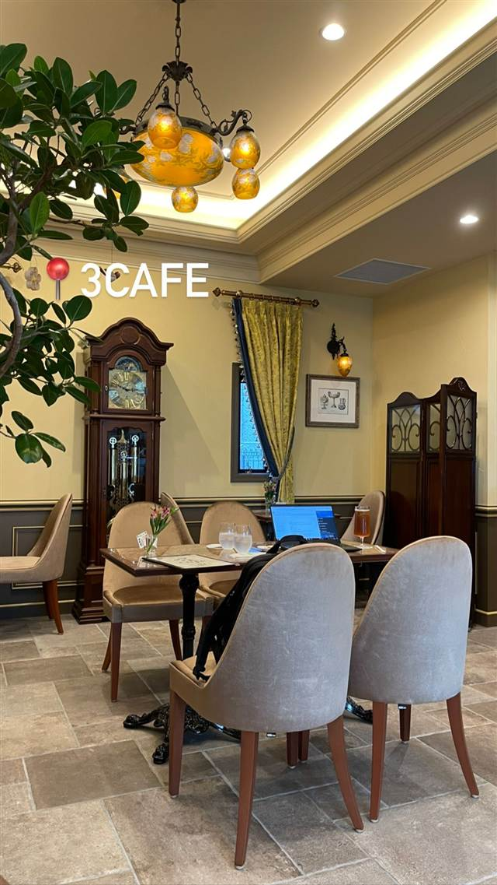

キッチンふるはし
1965年創業、メニュー52種の昭和スタイル洋食ハンバーグ
キッチンふるはし
1965年創業、広尾商店街の奥にひっそりと佇む老舗洋食店。今は二代目夫婦が営みながらも昭和の洋食スタイルを守り、ハンバーグやナポリタンなど52種類ものメニューを提供し続けている。
TRIVIA
豆知識
- メニューが52種類あり、週1回通えば約1年で全メニューを制覇できるほど豊富
- 洋食のセットに味噌汁が付くのが昭和スタイルの名残
REVIEWS
世間の評判
3.46食べログ
広尾の老舗洋食と抜群のコスパ
- 広尾という立地にしては安いボリューム満点のセットを評価する声が多い
- 昭和40年創業という広尾の老舗ならではのレトロな店内の雰囲気を評価する声が多い
- 食器の汚れなど店内の清潔さが気になるという声や昼どきの混雑を挙げる声もある
食べログ 口コミ218件
| 創業 | 1965年創業 |
|---|---|
| 看板 | ハンバーグ |
| こだわり | 昭和の洋食スタイルを今も守り続け、セット料理には味噌汁が付くのが特徴。メニューは52種類と豊富。 |
| どこから | 都心 |
| 営業時間 | 月 17:30-20:30 火 11:30-14:00、17:30-20:30 水 11:30-14:00 木・金 11:30-14:00、17:30-20:30 土・日 休み |
| 予算 | 昼 ¥1,000～¥1,999 夜 ¥1,000～¥1,999 |
| 定休日 | 土日祝 |
| 場所 | 広尾 東京都渋谷区広尾（広尾商店街） |
| メモ | 広尾商店街の奥、少し脇道に入った場所にあり、平日のみの営業。 |
食べたもの：ハンバーグとコロッケ定食
NEARBY
近い店・同じ系統の店
-
 イタリアン 広尾駅
ラ・ビスボッチャ（LA BISBOCCIA）
イタリア政府公認、手長海老のパッパルデッレなど郷土料理
夜 ¥20,000～¥29,999
イタリアン 広尾駅
ラ・ビスボッチャ（LA BISBOCCIA）
イタリア政府公認、手長海老のパッパルデッレなど郷土料理
夜 ¥20,000～¥29,999
-
 ピザ 広尾駅
the pizza tokyo
1枚焼きのニューヨークピザを1切れ600円台でスライス売り
夜 ¥1,000～¥1,999
ピザ 広尾駅
the pizza tokyo
1枚焼きのニューヨークピザを1切れ600円台でスライス売り
夜 ¥1,000～¥1,999
-
 ブランチ 広尾
ボンダイカフェ（BONDI CAFE）広尾本店
シドニーのビーチに憧れて生まれたとろとろエッグベネディクト
昼 ¥1,000～¥1,999 夜 ¥2,000～¥2,999
ブランチ 広尾
ボンダイカフェ（BONDI CAFE）広尾本店
シドニーのビーチに憧れて生まれたとろとろエッグベネディクト
昼 ¥1,000～¥1,999 夜 ¥2,000～¥2,999
-

カフェ 広尾駅 3cafe（広尾） アンティーク家具とピアノを配した昭和レトロな空間 昼 ¥1,000～¥1,999 -
 カレー 広尾
広尾のカレー
牛テールと牛骨を6時間煮込んだルーの牛テールカレー
昼 ¥1,000～¥1,999 夜 ¥1,000～¥1,999
カレー 広尾
広尾のカレー
牛テールと牛骨を6時間煮込んだルーの牛テールカレー
昼 ¥1,000～¥1,999 夜 ¥1,000～¥1,999
-
 アイス・ジェラート 広尾
MELTING IN THE MOUTH
世界初の形のソフトクリームを作るため専用機械を独自開発した
アイス・ジェラート 広尾
MELTING IN THE MOUTH
世界初の形のソフトクリームを作るため専用機械を独自開発した